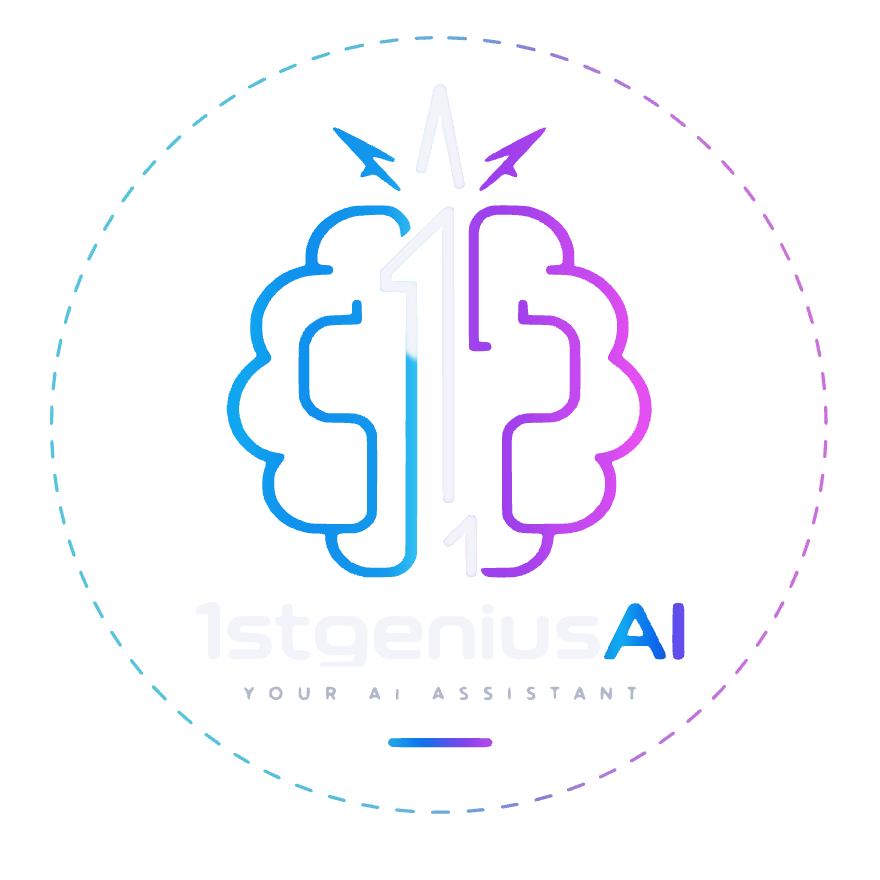

Guias grátis de IA em português
IA explicada sem jargão, no passo a passo.
Cada Reel do @1stgeniusai vem com um guia em PDF: o que a ferramenta faz, como instalar, prompts prontos para copiar e a fonte oficial com a data em que conferimos.
Download direto, sem cadastro. Avatar e voz dos vídeos são gerados por IA a partir do criador.

O que é
O que é a 1stgeniusAI
Um canal no Instagram que mostra, em vídeos curtos, uma ferramenta de IA funcionando de verdade. Cada vídeo vem com um guia em PDF para você repetir em casa, no seu ritmo.
Para quem é
Para quem usa o celular e o computador no dia a dia, tem curiosidade sobre IA e não é da área de tecnologia. Não precisa saber programar.
O que você recebe
Um Reel curto que mostra a ferramenta funcionando e um guia grátis em PDF com o passo a passo, os prompts prontos e a fonte oficial com data.
Quem aparece nos vídeos
Um avatar com voz gerados por IA a partir do criador do canal, com a autorização dele. O roteiro, os testes e a revisão são feitos por uma pessoa.
Como funciona
Assista ao Reel
Em cerca de 20 segundos você vê a ferramenta funcionando, na tela de verdade.
Comente a palavra
Cada Reel tem a sua palavra, como GUIA ou OUVIR. Comente no Reel e o PDF chega por mensagem no Instagram.
Receba o guia em PDF
O guia explica cada termo, traz os comandos e os prompts prontos para copiar e diz o que a ferramenta não faz. Se preferir, baixe direto neste site.
Biblioteca
Os guias disponíveis
Quatro PDFs gratuitos, um para cada Reel. Escolha pelo problema que você quer resolver hoje.
Comente GUIA no Reel
Do comentário ao CRM
Monte o “comente a palavra e receba o guia”: o comentário vira mensagem com link, e o contato fica salvo numa lista organizada (o CRM).
Comente CAMPANHA no Reel
Claude Ads: revise seus anúncios com o Claude
Instale a skill Claude Ads e peça ao Claude uma auditoria das suas campanhas pagas. Ela só mexe em algo com a sua aprovação.
Comente HTML no Reel
HyperFrames: vídeo feito com código
Você descreve a cena, o Claude escreve o código e a ferramenta transforma em vídeo MP4. Do primeiro vídeo aos prompts prontos.
Comente OUVIR no Reel
Faça a IA ouvir um vídeo
A IA não assiste a vídeos. Transforme a fala em texto, com o minuto de cada frase, no seu computador, e entregue esse texto ao Claude.
Baixar o PDF (175 KB)Reel em breve no Instagram
Nosso jeito
O que vale para todo guia
Testado antes de ensinar
Fazemos tudo no nosso computador primeiro. Quando algo não funciona, o guia avisa.
Fonte oficial com data
Ferramentas mudam rápido. Cada fato aponta para a página oficial e para o dia em que conferimos.
Sem promessa de dinheiro
Ensinamos a usar a ferramenta. O resultado depende do seu uso, e a gente não promete ganho.
Termo técnico explicado
Quando aparece uma palavra difícil, o guia diz o que ela quer dizer antes de seguir.
Quer entender outra ferramenta de IA?
Mande o nome por mensagem no Instagram. As perguntas mais pedidas viram Reel e guia.